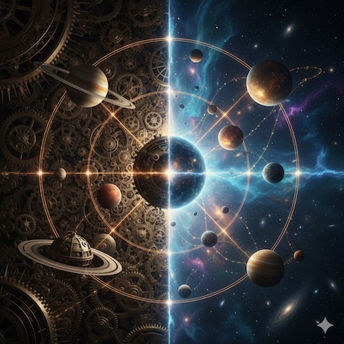
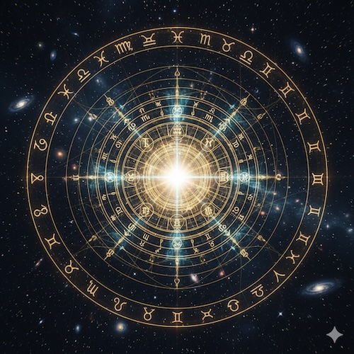
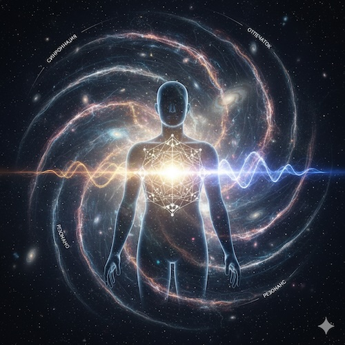

Время — это не просто цифры на циферблате. Это фундаментальный процесс, создающий нашу реальность. Мы изучаем его паттерны через планетарные циклы, отбросив мифы и оставив чистую логику синхронизма.
Без течения времени мир статичен и мертв. Всё живое в нашей реальности встроено в циклы. Миллионы лет эволюции создали в нас механизмы Синхронии и Резонанса с ритмами Солнечной системы.

Временные циклы, повторяющиеся миллионы лет, сформировали устойчивые законы развития систем.
Планеты не «влияют» на нас. Они — видимые и стабильные стрелки на часах Вселенной, позволяющие отслеживать ритмы Времени.
Способность живых систем действовать в такт с универсальными циклами реальности.
Тропический зодиак: Привязан к сезонам Земли. Он перестает работать, как только вы покидаете орбиту планеты или рождаетесь в космосе.
Сидерический зодиак: Основан на видимом сдвиге звезд, который является лишь следствием колебания земной оси (прецессии). Он так же локален и привязан к земному наблюдателю.
Решение MSA — Солнечный Зодиак: Зодиак — это путь Солнца, а не земного наблюдателя. Наша звезда движется вокруг Центра Галактики, который служит единственным стабильным «якорем» и полюсом для всей Солнечной системы. В MSA точка 0° Козерога — это вектор на этот центр. Нам исторически «повезло», что этот вектор почти совпадает с тропическим Козерогом, но MSA заменяет это везение математической точностью.

Древние наблюдатели накопили колоссальный объем верных эмпирических данных о планетарных циклах. Но, не имея современных знаний о физике и времени, они облекли эти закономерности в форму мифов и легенд.
Миссия MSA: Мы берем эти реальные данные и переводим их на язык современных знаний о времени, циклах и резонансе. Никаких богов — только закономерности реальности, которые мы наконец-то можем объяснить логически.

Теория MSA реализована в приложении ALFI — первом в мире инструменте, созданном для работы с синхронией и резонансом. Это ваш персональный навигатор в потоке временных циклов, адаптированный под современный социальный контекст.
Dive deep into the theory, or open the processor and navigate right now. Both paths lead to the same destination.
Read the full White Paper — 9 chapters covering the complete philosophical and technical foundation of MSA. Proto-Reality, Resonance, Galactic Zodiac, Synastry, and more.
READ WHITE PAPERLaunch ALFI — your personal MSA navigation instrument. Compute your Archetype, map a relationship, or check today's Radar window. Available on all platforms.
OPEN WEB APP